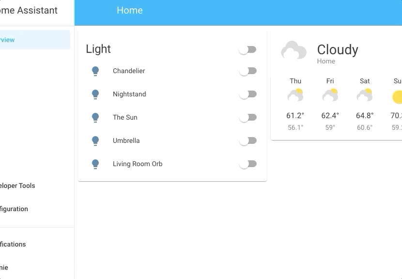
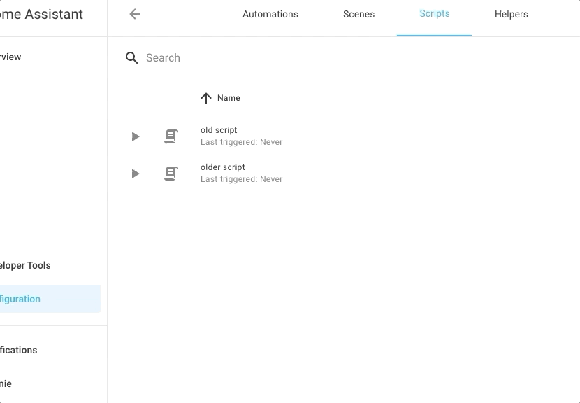
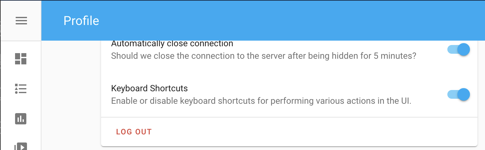

Quick bar
The Quick bar allows you to quickly look up entities or run commands without needing to navigate away from your current view (Similar to the “quick open” feature in VS Code, Chrome Developer Tools, etc).
It can be launched from anywhere in the frontend using hotkeys.
 Quick Bar for accessing entities and running commands
Quick Bar for accessing entities and running commands
Hotkeys
Type these from anywhere in the application to launch the dialog.
| Mode | Hotkey | Switch Modes |
|---|---|---|
| Entity Filter | e |
Type > at start of input to switch to command palette. Type # at start of input to switch to device filter. |
| Command Palette | c |
Remove > from start of input to switch to entity filter. |
| Device Filter | d |
Remove # from start of input to switch to entity filter. |
Create my link |
m |
Open a new tab to create a my link to the page you are on. |
| Assist | a |
Open the Home Assistant Assist dialog. |
The application must have focus for the hotkey to register. If the dialog doesn’t launch, try selecting an empty part of the main content area of Home Assistant and type it again.
Entity filter
Hotkey: e
Similar to Settings > Devices & services > Entities, but more lightweight and accessible from anywhere in the frontend.
 Filter for entities in Quick Bar's entity filter mode
Once launched, start typing your entity id (or “bits and pieces” of your entity id) to get back a filtered list of entities. Selecting an entity (or hitting enter when the desired entity is highlighted) will open the More info dialog for that entity.
This is helpful when, say, you are in the middle of writing an automation and need some quick insight about an entity but don’t want to navigate away to Developer Tools.
Device filter
Hotkey: d
Similar to Settings > Devices & services > Devices, but accessible from anywhere in the frontend.
Once launched, start typing your device name to get back a filtered list of your devices. Selecting a device (or hitting enter when the desired device is highlighted) will open the selected device detail page.
This is helpful when you need to quickly access a device’s detail page without navigating your way through the menu.
Command palette
Hotkey: c
Run various commands from anywhere without having to go to another view.
 Run commands in Quick Bar's "command palette"
Currently-supported commands
| Type | Available |
|---|---|
| Navigate | All entries in the sidebar and settings |
| Reload | All currently-supported “Reload {domain}” actions. (E.g., “Reload Scripts”) |
| Server | Restart/Stop |
My links
Hotkey: m
Create my links from any supported page in the user interface, when invoked on a supported page it will open a new tab that will allow you to share the link in different formats.
Assist
Hotkey: a
Opens the Assist dialog to interact with Home Assistant using your voice or by text. This feature is only available if you have set up a voice assistant.
Learn more about voice assistants.
Disabling shortcuts
You can enable or disable all of Home Assistant’s keyboard shortcuts by going to your User Profile and selecting the Keyboard shortcuts toggle button.
 Toggle button for enabling/disabling keyboard shortcuts added by Home Assistant.
Tips
Search by “bits and pieces” rather than an exact substring
We know something like “light.ch” should match “light.chandelier”. Similarly, “telev” should match “media_player.television”.
But with Quick Bar, “lich” would also match “light.chandelier”, and “plyrtv” would also match “media_player.television”. It checks letter sequences rather than exact substrings.
One nice use-case for this is that you can quickly filter out an entire domain of entities with just a couple letters and a period. For example, “li.” will match any “light.*” entities. Continuing with “li.ch” would bring up the chandelier right away.
Filters work against friendly name too
If “light.hue_ceiling_light” has been named “Chandelier”, you can type either “hue_ceil” or “chand” to find it.
Use the enter key any time to open the top result in the list
As soon as the item you wanted shows up at the top of your filtered results, just hit “enter” to activate it – no need to arrow down to the item, or select with your mouse.
Use arrow keys to move around the list
When in the text field, use the down arrow ↓ to navigate down the item list. Hit enter to activate the currently-highlighted row.
When in the item list, use the up arrow ↑ to navigate up the item list, and to get back into the text field.
Typing more letters will always add to your filter string
Say you’ve just used arrow keys to navigate half-way down the list, and want to add more text to your filter. You don’t need to select back into the text field, just start typing new letters and they’ll append to your filter.
Troubleshooting
Dialog doesn’t launch using hotkeys
There are a few possible reasons why the quick bar dialog won’t launch:
- Your user is not an admin.
- The application lost focus. Try selecting the main content area of the application and typing the shortcut again.
- You have disabled Keyboard Shortcuts in your User Profile settings.
- Shortcut is marked by browser as non-overridable. Firefox does this with some shortcuts, for example. But this shouldn’t be a problem with single-key shortcuts currently used by the Quick Bar.
- Some other application or browser extension is using or overriding the shortcut. Try disabling the extension.
A command is missing
The command list only shows commands that are available to you based on your user settings, and loaded integrations.
For example, if you don’t have automations: in your config, then you won’t see the Reload Automations command.
If Advanced Mode is turned off in User Settings, then any command related to advanced mode will not appear in the list.
If a command is missing that you feel is in error, please create an issue on GitHub.
Shortcuts interfere with accessibility tools, browser extensions, or are otherwise annoying
You can disable shortcuts in your User settings.
Please consider submitting an issue explaining why the shortcut was disruptive to you. Keyboard shortcuts are new to Home Assistant, and getting them right is a challenge for any Web application. We rely on user feedback to ensure the experience is minimally-disruptive.